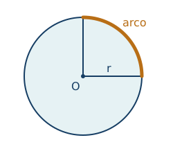
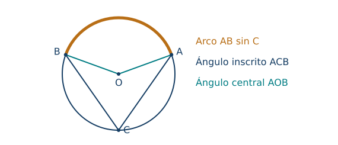
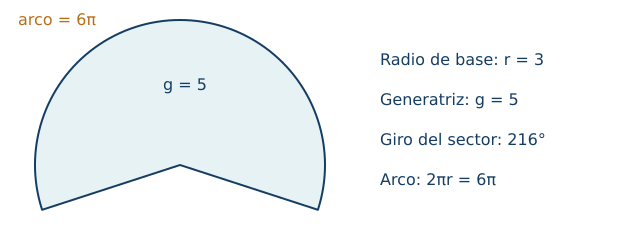
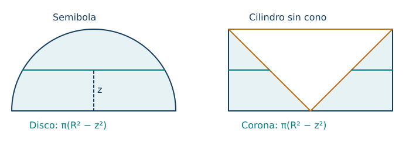

Circunferencia, círculo y geometría del espacio
← Congruencia, semejanza, Pitágoras y escalas · Índice del libro · Siguiente →
Una comunidad quiere cercar una zona circular y sembrar su interior. El alambre se compra por metros; las semillas, según los metros cuadrados de terreno. El mismo radio gobierna ambos presupuestos, pero duplicarlo produce efectos distintos. Esta diferencia entre borde e interior acompañará todo el capítulo. Al pasar al espacio aparecerá una tercera medida: cuánto cabe dentro de un recipiente.
Trabajaremos con figuras ideales. Un cable tendrá espesor despreciable; un depósito tendrá paredes sin grosor, salvo indicación contraria. Antes de calcular conviene decidir qué objeto mide la fórmula, cuáles son sus unidades y qué datos pertenecen al modelo. Mantendremos \(\pi\) en los resultados exactos y aproximaremos al final cuando la pregunta lo requiera.
Del borde a la región
Fijemos un punto \(O\) y una distancia \(r>0\). La circunferencia reúne los puntos del plano cuya distancia a \(O\) es exactamente \(r\). El círculo incluye además los puntos interiores: su distancia a \(O\) es menor o igual que \(r\). Un radio une el centro con un punto de la circunferencia; una cuerda une dos puntos de ella. El diámetro es una cuerda que pasa por el centro y mide \(2r\).

El arco es una porción de circunferencia. Dos extremos distintos determinan dos arcos; nombrar sus extremos puede resultar insuficiente para elegir uno. Un sector está limitado por dos radios y uno de esos arcos. Un segmento circular queda entre una cuerda y un arco. Estas regiones tienen áreas, mientras que los arcos tienen longitudes.
En circunferencias semejantes, el cociente entre longitud y diámetro permanece constante. Ese número es \(\pi\): si \(L\) es la longitud, \(\pi=L/(2r)\) y, por definición, \(L=2\pi r\). Su existencia como longitud curva se apoya en el principio usual de aproximación por polígonos: los perímetros inscritos y circunscritos se acercan a un mismo valor. Adoptaremos esa base de medida continua; la semejanza explica por qué el cociente no depende del tamaño.
Para obtener el área podemos volver a los triángulos: un polígono regular inscrito se divide desde el centro en triángulos cuya altura común es la apotema \(a\). Si su perímetro es \(p\), sumar las áreas de esas piezas da \(pa/2\). Al aumentar el número de lados, el perímetro se aproxima a \(2\pi r\) y la apotema a \(r\); los polígonos circunscritos proporcionan cotas por fuera que se acercan al mismo valor. La región circular queda encerrada entre ambas aproximaciones y su área es por ello \(\pi r^2\). El principio de medida continua adoptado permite identificar el área mediante esas cotas; el apéndice desarrolla el argumento.
Propiedades del círculo y su borde
| Propiedad | Fórmula y condiciones de uso |
|---|---|
| Circunferencia y círculo | Distancias al centro iguales a \(r\), o menores o iguales que \(r\), respectivamente; \(r>0\). |
| Diámetro | \(d=2r\); la cuerda pasa por el centro. |
| Longitud del borde | \(L=2\pi r=\pi d\). |
| Área del círculo | \(A=\pi r^2\). |
| Corona circular | \(A=\pi(R^2-r^2)\), con círculos concéntricos y \(0\le r<R\). |
Pruebas. Véase «Medida del círculo y aproximación poligonal» en el apéndice; allí se distinguen definiciones y principios de medida adoptados.
Problema 1. Dos compras distintas
Enunciado. Un jardín tiene radio \(6\,\mathrm m\). ¿Cuánto mide su borde y cuál es su área?
Solución. Para cercarlo seguimos una línea cerrada: \(L=2\pi\cdot6=12\pi\,\mathrm m\). Para sembrarlo cubrimos una región: \(A=\pi\cdot6^2=36\pi\,\mathrm{m^2}\). Aproximadamente son \(37{,}70\,\mathrm m\) y \(113{,}10\,\mathrm{m^2}\). El número de metros de alambre no puede sustituirse por el de metros cuadrados de terreno; cada presupuesto necesita su propia medida.
Problema 2. Recuperar el radio
Enunciado. Una circunferencia mide \(18\pi\,\mathrm{cm}\). Calcula el área de su círculo.
Solución. La longitud dada determina el radio mediante \(2\pi r=18\pi\). Dividimos por \(2\pi>0\) y obtenemos \(r=9\,\mathrm{cm}\). Ahora sí usamos la fórmula de área: \(A=\pi\cdot9^2=81\pi\,\mathrm{cm^2}\). La unidad también permite controlar el procedimiento: dividir una longitud por un número deja una longitud; elevar después el radio al cuadrado produce un área.
Problema 3. El sendero exterior
Enunciado. Un estanque de radio \(5\,\mathrm m\) está rodeado por un sendero de anchura uniforme \(2\,\mathrm m\). Halla el área del sendero.
Solución. La anchura se añade al radio, de modo que el borde exterior tiene radio \(7\,\mathrm m\). La región transitable es la diferencia entre los dos círculos: \(A=\pi(7^2-5^2)=24\pi\,\mathrm{m^2}\). Usar \(\pi\cdot2^2\) daría el área de un círculo de radio igual a la anchura, que no representa el sendero. Como comprobación, la diferencia de cuadrados da \((7-5)(7+5)=2\cdot12=24\).
Problema 4. Duplicar la superficie
Enunciado. Se amplía un disco de radio \(4\,\mathrm{cm}\) hasta duplicar su área. ¿Cuál es el nuevo radio y cómo cambia el perímetro?
Solución. Si \(R\) es el radio nuevo, \(\pi R^2=2\pi\cdot4^2\), así que \(R^2=32\). El radio es positivo: \(R=4\sqrt2\,\mathrm{cm}\). El cociente de perímetros es \(2\pi R/(2\pi\cdot4)=\sqrt2\). Por tanto, el área se duplica y el borde aumenta en un factor \(\sqrt2\), aproximadamente un \(41{,}4\%\). El resultado concuerda con los factores de semejanza del capítulo anterior.
Medir un giro recorriendo un arco
Una rueda puede girar un cuarto de vuelta cualquiera que sea su radio. La longitud recorrida por un punto del borde sí depende de ese radio. Para separar ambos efectos definimos la medida en radianes de un ángulo central: \(\theta=s/r\), donde \(s\) es la longitud del arco recorrido en el sentido elegido. En este capítulo las longitudes de arcos se toman positivas y los giros entre cero y una vuelta completa. Una vuelta tiene \(2\pi\) radianes porque su arco mide \(2\pi r\).
Así, \(360^\circ=2\pi\) radianes y \(180^\circ=\pi\) radianes. Un radián es el ángulo que abarca un arco de longitud igual al radio. El cociente \(s/r\) es adimensional, aunque escribir «rad» evita confundirlo con un valor en grados. De la definición se obtiene \(s=r\theta\). Si el dato está en grados, primero se convierte o se usa directamente la fracción \(\alpha/360^\circ\) de la vuelta.
El área de un sector ocupa la misma fracción del área del círculo que su ángulo ocupa del giro completo. Para fracciones racionales se demuestra partiendo el círculo en sectores congruentes; para las demás, la aproximación entre ángulos racionales y la monotonía del área permiten pasar al límite. Por ello \(A_s=\theta r^2/2=rs/2\) cuando \(\theta\) se expresa en radianes. El perímetro del sector incluye sus dos radios: es \(s+2r\) para un sector propio de ángulo entre cero y una vuelta. Un círculo completo tiene únicamente su borde circular: los radios de una partición no forman parte del contorno exterior.
Propiedades de arcos y sectores
| Propiedad | Fórmula y condiciones de uso |
|---|---|
| Conversión angular | \(\theta=\alpha\pi/180\) si \(\alpha\) es el valor numérico en grados. |
| Longitud de arco | \(s=r\theta\) en radianes; \(s=2\pi r\alpha/360\) en grados. |
| Área de sector | \(A_s=r^2\theta/2=rs/2\), con \(0\le\theta\le2\pi\). |
| Contorno de sector propio | \(P=s+2r\), con \(0<\theta<2\pi\). |
| Segmento menor | Área del sector menos área del triángulo de sus radios; ángulo central entre \(0^\circ\) y \(180^\circ\). |
Pruebas. Véase «Radianes, sectores y segmentos» en el apéndice.
Problema 5. Una pieza de abanico
Enunciado. Un sector de radio \(12\,\mathrm{cm}\) abarca \(75^\circ\). Calcula arco, área y perímetro.
Solución. El giro representa \(75/360=5/24\) de una vuelta. Por tanto, \(s=(5/24)\cdot24\pi=5\pi\,\mathrm{cm}\) y \(A_s=(5/24)\cdot144\pi=30\pi\,\mathrm{cm^2}\). El borde de la pieza incluye dos segmentos rectos de \(12\,\mathrm{cm}\), de modo que \(P=24+5\pi\,\mathrm{cm}\). También podemos convertir \(75^\circ\) en \(5\pi/12\) radianes y verificar que \(12(5\pi/12)=5\pi\).
Problema 6. Un giro expresado por el arco
Enunciado. En una circunferencia de radio \(8\,\mathrm{cm}\) se recorre un arco de \(10\,\mathrm{cm}\). Halla el ángulo en radianes y el área del sector.
Solución. La definición da \(\theta=s/r=10/8=5/4\) radianes. No hace falta transformar ese valor a grados: \(A_s=rs/2=8\cdot10/2=40\,\mathrm{cm^2}\). Para comprobar que se trata de un sector propio observamos que \(5/4<2\pi\). Introducir \(5/4\) como si fueran grados reduciría indebidamente tanto el arco como el área.
Problema 7. La huella de una rueda
Enunciado. Una rueda de radio \(0{,}35\,\mathrm m\) da 20 vueltas completas sin deslizar. ¿Qué distancia recorre?
Solución. La condición sin deslizamiento identifica el avance por vuelta con la longitud de la circunferencia. Así, \(D=20(2\pi\cdot0{,}35)=14\pi\,\mathrm m\), aproximadamente \(43{,}98\,\mathrm m\). En radianes el giro acumulado es \(40\pi\) y se obtiene lo mismo con \(D=r\theta\). Si hubiera deslizamiento, contar vueltas no bastaría para determinar la distancia real.
Problema 8. Una ventana entre cuerda y arco
Enunciado. Una cuerda abarca un ángulo central de \(90^\circ\) en un círculo de radio \(6\,\mathrm{cm}\). Calcula el área del segmento menor.
Solución. El sector ocupa un cuarto del círculo: su área es \(9\pi\,\mathrm{cm^2}\). Los dos radios son perpendiculares y forman un triángulo rectángulo de catetos \(6\) y \(6\), de área \(18\,\mathrm{cm^2}\). La región entre cuerda y arco resulta al retirarlo: \(A=9\pi-18\,\mathrm{cm^2}\), aproximadamente \(10{,}27\,\mathrm{cm^2}\). Es positivo y menor que el área del sector, dos controles geométricos útiles.
Ángulos que miran el mismo arco
El ángulo inscrito tiene el vértice en la circunferencia y sus lados siguen dos cuerdas. Intercepta el arco entre los otros extremos que no contiene el vértice. Su medida es la mitad de la de ese arco, expresada por el ángulo central correspondiente. Para entender la mitad, unamos el vértice al centro: aparecen triángulos isósceles, porque sus radios son iguales. Sus ángulos de base son iguales; al usar la suma de ángulos de cada triángulo se obtiene el doble en el centro. Cuando el centro queda fuera del ángulo, la misma relación se obtiene restando dos de estos casos. El apéndice desarrolla los tres emplazamientos sin depender del aspecto del dibujo.
Por tanto, todos los ángulos inscritos que miran el mismo arco tienen igual medida. Si miran un diámetro, el arco interceptado mide \(180^\circ\) y el ángulo es recto. Una tangente toca la circunferencia en un punto y es perpendicular al radio trazado allí: cualquier otro punto de esa perpendicular está a distancia mayor que \(r\), por Pitágoras. Recíprocamente, una recta tangente no puede quedar a distancia menor que \(r\) del centro, pues entonces cortaría la circunferencia en dos puntos.

La semejanza permite comparar también las longitudes que quedan al cortar dos cuerdas. Los triángulos formados por sus extremos y el punto de intersección tienen pares de ángulos inscritos iguales, de modo que sus lados correspondientes producen proporciones. Al multiplicar en cruz aparecen productos de segmentos. Desde un punto exterior haremos una construcción semejante con dos secantes: cada producto relacionará el tramo exterior con la secante completa; para una tangente, aparecerá el cuadrado de su longitud. Estas relaciones se conocen como potencia de un punto, y para aplicarlas tendremos que identificar los extremos de cada segmento siguiendo la correspondencia entre los triángulos.
Si dos cuerdas se cortan dentro, el ángulo mide la semisuma de los arcos que interceptan él y su opuesto por el vértice. Si dos secantes se cortan fuera, el ángulo mide la semidiferencia entre el arco lejano y el cercano. Las fórmulas se obtienen aplicando la suma de ángulos de un triángulo a los puntos de intersección con la circunferencia; la diferencia exterior debe ser no negativa para el ángulo elegido.
Propiedades de ángulos, cuerdas y tangentes
| Propiedad | Fórmula y condiciones de uso |
|---|---|
| Ángulo inscrito | Mitad del arco interceptado que no contiene el vértice. |
| Diámetro y ángulo recto | Todo ángulo inscrito que intercepta una semicircunferencia mide \(90^\circ\). |
| Radio y tangente | Son perpendiculares en el punto de contacto. |
| Cuerdas interiores | \(PA\cdot PB=PC\cdot PD\) si \(A,P,B\) y \(C,P,D\) están alineados. |
| Secantes exteriores | \(PA\cdot PB=PC\cdot PD\), con órdenes \(P,A,B\) y \(P,C,D\). |
| Tangente y secante | \(PT^2=PA\cdot PB\), con \(T\) punto de contacto y orden \(P,A,B\). |
| Ángulo interior | Semisuma de los arcos interceptados por el ángulo y su opuesto. |
| Ángulo exterior | Semidiferencia del arco lejano y el cercano para dos secantes. |
Pruebas. Véase «Ángulos y potencia de un punto» en el apéndice.
Problema 9. Elegir el arco correcto
Enunciado. Los puntos \(A,B,C\) pertenecen a una circunferencia. El arco de \(A\) a \(B\) que no contiene a \(C\) mide \(124^\circ\). Halla \(\angle ACB\).
Solución. El vértice está en la circunferencia y los lados pasan por \(A\) y \(B\): es un ángulo inscrito. El enunciado ya elige el arco que intercepta, por lo que \(\angle ACB=124^\circ/2=62^\circ\). El otro arco mide \(236^\circ\) y contiene a \(C\); utilizarlo respondería a un ángulo con el vértice en la otra porción del borde.
Problema 10. Una cuerda dividida
Enunciado. Dos cuerdas \(AB\) y \(CD\) se cortan en \(P\) interior. Se sabe que \(PA=3\), \(PB=8\) y \(PC=4\), en centímetros. Halla \(PD\).
Solución. Los cuatro segmentos se miden desde el punto interior hasta los extremos de sus respectivas cuerdas. La igualdad de productos da \(3\cdot8=4\cdot PD\); como \(PC=4>0\), dividimos y obtenemos \(PD=6\,\mathrm{cm}\). El producto común es \(24\,\mathrm{cm^2}\). No representa el área de un rectángulo situado necesariamente en la figura: es una magnitud invariante derivada de la semejanza.
Problema 11. La longitud completa importa
Enunciado. Desde \(P\) exterior sale una secante con tramo exterior \(4\,\mathrm{cm}\) y tramo interior \(5\,\mathrm{cm}\). Halla la longitud de una tangente desde \(P\).
Solución. La secante completa mide \(4+5=9\,\mathrm{cm}\). Si \(t\) es el segmento desde \(P\) hasta el contacto, entonces \(t^2=4\cdot9=36\,\mathrm{cm^2}\). Tomamos la raíz positiva: \(t=6\,\mathrm{cm}\). El producto \(4\cdot5\) usaría solo el tramo interior como segundo factor y no corresponde al teorema. Una longitud negativa tampoco sería admisible.
Problema 12. Dos emplazamientos del vértice
Enunciado. En una figura dos cuerdas se cortan dentro e interceptan arcos opuestos de \(100^\circ\) y \(40^\circ\). En otra, dos secantes exteriores interceptan arcos lejano y cercano de esas mismas medidas. Halla cada ángulo.
Solución. En el primer caso el ángulo interior es \((100^\circ+40^\circ)/2=70^\circ\). En el segundo, el ángulo exterior es \((100^\circ-40^\circ)/2=30^\circ\). Son figuras distintas: desplazar el vértice fuera cambia la relación angular. Para decidir entre suma y diferencia debemos ubicar el vértice e identificar los arcos, antes de operar con sus números.
Volumen, altura y secciones paralelas
Un prisma se obtiene al trasladar un polígono a lo largo de un segmento que no pertenece a su plano, rellenando los segmentos entre puntos correspondientes. Sus dos bases son congruentes y paralelas. La altura es la distancia perpendicular entre sus planos; en un prisma oblicuo no coincide con una arista lateral. Un cilindro circular se construye de manera análoga desde un círculo. Reservaremos las fórmulas sencillas de superficie lateral al prisma recto y al cilindro recto.
Medimos volumen en cubos unidad. Adoptamos aditividad para partes sin interior común, monotonía y continuidad al aproximar cuerpos por regiones cada vez más finas. También adoptamos el principio de Cavalieri: dos sólidos de igual altura, cuyas secciones por planos a cada misma distancia de la base tienen igual área, poseen igual volumen. Es una base de medida que aquí se utiliza explícitamente; una ilustración con tres cortes no demuestra la igualdad en todas las alturas.
Un prisma de base poligonal se divide en prismas triangulares. La fórmula \(V=A_bh\) se obtiene desde cajas y la aditividad; Cavalieri extiende el resultado a prismas oblicuos. En un cilindro, cada corte paralelo a la base tiene área \(\pi r^2\), por lo que su volumen es \(\pi r^2h\). En un cilindro recto, abrir la superficie lateral produce un rectángulo de lados \(2\pi r\) y \(h\): su área es \(2\pi rh\). Para una superficie total cerrada se añaden las dos bases.
Una pirámide o un cono tiene una base y un vértice fuera de su plano. Sus cortes paralelos a la base, a altura \(z\) desde ella, son semejantes a la base con factor \(1-z/h\). Así sus áreas son \(A_b(1-z/h)^2\). Dos pirámides de igual altura e igual área de base tienen iguales áreas de corte; Cavalieri da volúmenes iguales aunque sus bases tengan formas distintas. Un prisma triangular se puede dividir en tres tetraedros de igual volumen: el apéndice justifica esa igualdad sin suponer la fórmula buscada. De ahí \(V=A_bh/3\) para pirámides; la aproximación de bases poligonales o Cavalieri lleva al cono. La fórmula del cono, por tanto, exige una explicación volumétrica además de reconocer un triángulo en su perfil.
En un cono circular recto, la generatriz \(g\) une el vértice con el borde y cumple \(g^2=h^2+r^2\). Al abrir su superficie lateral obtenemos un sector de radio \(g\), cuyo arco tiene longitud \(2\pi r\). Su área es \(g(2\pi r)/2=\pi rg\); una sola base completa la superficie total. En recipientes abiertos se cuenta únicamente la superficie realmente presente.

Propiedades de prismas, cilindros y conos
| Propiedad | Fórmula y condiciones de uso |
|---|---|
| Cavalieri | Igual altura e igual área de sección en cada nivel implican igual volumen. Principio adoptado. |
| Prisma y cilindro | \(V=A_bh\); altura perpendicular. En cilindro circular, \(A_b=\pi r^2\). |
| Superficie de prisma recto | \(A_L=P_bh\) y \(A_T=P_bh+2A_b\). |
| Superficie de cilindro recto | \(A_L=2\pi rh\) y \(A_T=2\pi rh+2\pi r^2\). |
| Pirámide y cono | \(V=A_bh/3\); en cono circular \(V=\pi r^2h/3\). |
| Cono circular recto | \(g^2=h^2+r^2\), \(A_L=\pi rg\) y \(A_T=\pi rg+\pi r^2\). |
Pruebas. Véase «Prismas, conos y Cavalieri» en el apéndice.
Problema 13. Un envase sin tapa
Enunciado. Un prisma recto de base rectangular \(8\,\mathrm{cm}\) por \(5\,\mathrm{cm}\) tiene altura \(12\,\mathrm{cm}\). Halla su capacidad y el área de material sin tapa.
Solución. El área de base es \(8\cdot5=40\,\mathrm{cm^2}\) y el volumen \(40\cdot12=480\,\mathrm{cm^3}\). Los cuatro lados del envase forman un rectángulo desplegado de altura \(12\) y longitud \(2(8+5)=26\), con área \(312\,\mathrm{cm^2}\). Como solo hay una base de material, el total es \(312+40=352\,\mathrm{cm^2}\). Se ha supuesto espesor despreciable y ausencia de pestañas o solapamientos.
Problema 14. Cuánta agua cabe
Enunciado. Un depósito cilíndrico recto de radio interior \(3\,\mathrm{dm}\) y altura \(8\,\mathrm{dm}\) está cerrado. Halla su capacidad en litros y su superficie total ideal.
Solución. El volumen interior es \(\pi\cdot3^2\cdot8=72\pi\,\mathrm{dm^3}=72\pi\) litros, pues \(1\,\mathrm{dm^3}=1\) litro. La superficie lateral vale \(2\pi\cdot3\cdot8=48\pi\,\mathrm{dm^2}\) y las dos bases suman \(18\pi\,\mathrm{dm^2}\). Total: \(66\pi\,\mathrm{dm^2}\). Si el depósito estuviera abierto, la capacidad no cambiaría, pero habría que retirar una base del área de material.
Problema 15. Fabricar un cono
Enunciado. Un cono circular recto tiene radio \(3\,\mathrm{cm}\) y altura \(4\,\mathrm{cm}\). Halla volumen, superficie lateral y total.
Solución. En el triángulo de la sección axial, el radio y la altura son catetos: \(g=\sqrt{3^2+4^2}=5\,\mathrm{cm}\). El volumen es \(\pi\cdot3^2\cdot4/3=12\pi\,\mathrm{cm^3}\). Para cubrir el costado se necesita \(\pi rg=15\pi\,\mathrm{cm^2}\) y para cerrarlo se añade la base \(9\pi\,\mathrm{cm^2}\): \(A_T=24\pi\,\mathrm{cm^2}\). La altura interviene en la capacidad y la generatriz en el desarrollo lateral.
Problema 16. El mismo llenado en cada nivel
Enunciado. Un cilindro y un prisma oblicuo tienen altura \(10\,\mathrm{cm}\) y área de base \(18\,\mathrm{cm^2}\). Justifica que sus volúmenes son iguales. ¿Bastaría conocer solo una sección de área \(18\)?
Solución. En ambos cuerpos, cada plano paralelo a las bases produce una sección congruente a su respectiva base; todas tienen área \(18\,\mathrm{cm^2}\). Coinciden así las áreas en cada uno de los niveles de la misma altura, y Cavalieri da \(V=18\cdot10=180\,\mathrm{cm^3}\) para los dos. Una única sección no bastaría: un cono puede tener una sección de esa área y estrecharse en los niveles restantes. También es indispensable comparar alturas iguales.
La esfera por dentro y por fuera
La esfera de radio \(R\) es la superficie de puntos del espacio situados a distancia \(R\) del centro; la bola incluye su interior. En el uso habitual se habla de «volumen de la esfera» para referirse al volumen de esa bola. Un plano a distancia \(d<R\) del centro corta la bola en un círculo. Pitágoras da \(\rho^2=R^2-d^2\) para su radio \(\rho\). Si \(d=R\), el corte es un único punto y su área es cero; si \(d>R\), el plano queda fuera de la bola. Para situar los cortes a uno y otro lado del centro usaremos una altura con signo \(z\), de modo que \(d=\lvert z\rvert\).
Comparemos ahora la semibola superior con un cilindro de radio y altura \(R\) al que se retira un cono de esa misma base y altura, con vértice en el centro de la base inferior del cilindro. A altura \(z\) el cono retirado tiene radio \(z\), de modo que la corona restante tiene área \(\pi R^2-\pi z^2\). Es exactamente la del corte de la semibola. Por Cavalieri, el volumen de la semibola es \(\pi R^3-\pi R^3/3=2\pi R^3/3\); al duplicar obtenemos \(4\pi R^3/3\).

Ya conocemos el volumen de la bola y podemos usarlo para buscar su superficie. La relación que nos ayudará es la del volumen de una pirámide con el área de su base y su altura. Aproximemos la esfera mediante un poliedro circunscrito de muchas caras planas pequeñas, tangentes a ella. Al unir cada cara con el centro obtenemos pirámides que comparten la altura \(R\), porque la distancia del centro a cada plano tangente es el radio. Sumar sus volúmenes produce \(RA_n/3\), donde \(A_n\) es el área de la superficie del poliedro.
Adoptamos la definición usual del área esférica como el límite de áreas de aproximaciones regulares de este tipo, cuyo tamaño máximo de caras tiende a cero. Por continuidad del volumen, los volúmenes de los poliedros se acercan al de la bola; al mismo tiempo, \(RA_n/3\) se acerca a \(RA/3\). Así, \(A=3V/R=4\pi R^2\). La aproximación regular y los principios de medida declarados sostienen el paso al límite que vincula superficie y volumen.
Bajo una semejanza de factor lineal positivo \(k\), las superficies se multiplican por \(k^2\) y los volúmenes por \(k^3\). Los resultados para círculo y esfera permiten comprobarlo directamente. La comparación presupone cuerpos semejantes: dos recipientes de igual volumen pueden tener formas y superficies muy distintas.
Propiedades de la esfera y la semejanza espacial
| Propiedad | Fórmula y condiciones de uso |
|---|---|
| Sección de una bola | \(\rho^2=R^2-z^2\), con \(\lvert z\rvert\le R\) y \(\rho\ge0\). |
| Volumen de bola | \(V=4\pi R^3/3\), con \(R>0\). |
| Superficie esférica | \(A=4\pi R^2\); fundamentación por aproximación regular de poliedros. |
| Superficie de semibola cerrada | \(A_T=3\pi R^2\); incluye el disco de la base. |
| Escalas espaciales | \(A'=k^2A\), \(V'=k^3V\) para cuerpos semejantes y \(k>0\). |
Pruebas. Véase «Volumen y superficie de la esfera» en el apéndice.
Problema 17. Una esfera y su envase
Enunciado. Una bola de radio \(3\,\mathrm{cm}\) cabe ajustadamente en un cilindro recto. Calcula la fracción del volumen cilíndrico que ocupa.
Solución. El cilindro tiene radio \(3\) y altura igual al diámetro, \(6\,\mathrm{cm}\). Su volumen es \(54\pi\,\mathrm{cm^3}\); la bola ocupa \(4\pi\cdot3^3/3=36\pi\,\mathrm{cm^3}\). La fracción es \(36\pi/(54\pi)=2/3\). Como queda dentro de su envase, es razonable que sea menor que uno. El espacio libre es \(18\pi\,\mathrm{cm^3}\), un tercio del volumen del cilindro.
Problema 18. Pintar una cúpula
Enunciado. Una cúpula esférica es exactamente media esfera de radio \(5\,\mathrm m\). ¿Qué área curva se pinta? ¿Qué superficie total tendría la semibola cerrada?
Solución. La parte curva corresponde a la mitad de \(4\pi\cdot5^2\), es decir, \(50\pi\,\mathrm{m^2}\). La base plana tiene área \(25\pi\,\mathrm{m^2}\); si el objeto se considera cerrado, su superficie total es \(75\pi\,\mathrm{m^2}\). Para pintar solo la cúpula no añadimos el disco. La palabra «superficie» necesita precisar si se incluye una cara de cierre.
Problema 19. Fundir y volver a moldear
Enunciado. Una bola maciza de radio \(6\,\mathrm{cm}\) se funde para fabricar bolas de radio \(2\,\mathrm{cm}\), sin pérdida de material. ¿Cuántas se obtienen?
Solución. La conservación del material se traduce aquí en conservación del volumen; suponemos la misma densidad y ningún hueco. El cociente es \((4\pi\cdot6^3/3)/(4\pi\cdot2^3/3)=(6/2)^3=27\). Se obtienen 27 bolas. Aunque el volumen total se conserva, la suma de superficies se triplica: las pequeñas suman \(27\cdot16\pi=432\pi\), frente a \(144\pi\,\mathrm{cm^2}\) de la grande.
Problema 20. Una esfera hueca ideal
Enunciado. Una pieza esférica tiene radio exterior \(5\,\mathrm{cm}\) e interior \(4\,\mathrm{cm}\). Halla el volumen de material y el área conjunta de sus dos superficies.
Solución. El material ocupa la diferencia entre bolas concéntricas: \(V=\frac{4\pi}{3}(5^3-4^3)=244\pi/3\,\mathrm{cm^3}\). Sus dos fronteras son superficies esféricas completas, así que \(A=4\pi(5^2+4^2)=164\pi\,\mathrm{cm^2}\). En el volumen restamos lo retirado; en la superficie sumamos las dos caras que quedan expuestas. La anchura \(1\,\mathrm{cm}\) de la pared no es el radio de una bola equivalente.
Ver un corte sin dejarse engañar por la perspectiva
Un dibujo espacial comprime tres dimensiones en una hoja. Una elipse puede representar una circunferencia; dos trazos que se cruzan en la página pueden estar separados en el espacio. Para resolver una pregunta de longitudes debemos construir un triángulo en un plano adecuado y justificar sus ángulos rectos.
En una caja rectangular de aristas \(a,b,c>0\), una diagonal de la base mide \(\sqrt{a^2+b^2}\). Esa diagonal y la arista vertical pertenecen a un plano y son perpendiculares. Aplicando Pitágoras otra vez, la diagonal espacial mide \(\sqrt{a^2+b^2+c^2}\). La proyección perpendicular sobre la base conserva las dos componentes horizontales y elimina la vertical; una fotografía oblicua no tiene por qué representar esa proyección.
En un cono recto, el corte por un plano paralelo a la base es un círculo. Si el plano está a distancia \(x\) del vértice, la sección axial da triángulos semejantes: \(\rho/r=x/h\). En la bola, en cambio, el radio del corte cumple una relación cuadrática. Comparar ambas expresiones ayuda a reconocer el papel de cada modelo. Los cortes de Cavalieri se comparan a igual altura y con igual área; no tienen que compartir forma ni perímetro.
Propiedades de secciones y diagonales
| Propiedad | Fórmula y condiciones de uso |
|---|---|
| Diagonal de caja rectangular | \(d^2=a^2+b^2+c^2\), con aristas mutuamente perpendiculares. |
| Proyección perpendicular | La diagonal de base mide \(q=\sqrt{a^2+b^2}\) y \(d^2=q^2+c^2\). |
| Sección paralela de cono recto | \(\rho/r=x/h\) y \(A_x/A_b=(x/h)^2\), con \(0\le x\le h\) medido desde el vértice. |
Pruebas. Véase «Secciones y distancias en el espacio» en el apéndice.
Problema 21. La varilla dentro de la caja
Enunciado. Una caja rectangular mide \(3\), \(4\) y \(12\,\mathrm{cm}\). Halla su diagonal espacial y la longitud de su proyección sobre la base de lados 3 y 4.
Solución. La proyección une vértices opuestos de la base: \(q=\sqrt{3^2+4^2}=5\,\mathrm{cm}\). La diagonal espacial, \(q\) y la altura forman un triángulo rectángulo, pues la altura es perpendicular al plano de la base. Así, \(d=\sqrt{5^2+12^2}=13\,\mathrm{cm}\). La varilla diagonal puede medir más que cualquiera de las aristas; su proyección es más corta porque se ha eliminado la componente vertical.
Problema 22. Un corte fuera del ecuador
Enunciado. Un plano corta una bola de radio \(13\,\mathrm{cm}\) y está a \(5\,\mathrm{cm}\) del centro. Calcula el radio y el área de la sección.
Solución. La perpendicular desde el centro al plano pasa por el centro del círculo de corte. Con un radio de la bola se forma un triángulo rectángulo: \(\rho^2+5^2=13^2\). Por tanto, \(\rho^2=144\), \(\rho=12\,\mathrm{cm}\) y \(A=144\pi\,\mathrm{cm^2}\). La sección es menor que el círculo máximo, de área \(169\pi\), como corresponde a un plano que no pasa por el centro.
Problema 23. Un corte paralelo en un cono
Enunciado. Un cono recto tiene radio \(6\,\mathrm{cm}\) y altura \(12\,\mathrm{cm}\). Se corta por un plano paralelo a la base a \(4\,\mathrm{cm}\) del vértice. Halla el área del corte y el volumen del cono pequeño superior.
Solución. La razón lineal es \(k=4/12=1/3\), por semejanza en la sección axial. El radio del corte es \(6/3=2\,\mathrm{cm}\) y el área \(4\pi\,\mathrm{cm^2}\). El cono pequeño tiene altura 4 y volumen \(\pi\cdot2^2\cdot4/3=16\pi/3\,\mathrm{cm^3}\). El corte está a un tercio de la altura desde el vértice; medir desde la base sin convertir la distancia cambiaría la razón. El volumen es \(1/27\) del original, \(144\pi\).
Problema 24. Un molde con un vacío cónico
Enunciado. De un cilindro de radio \(4\,\mathrm{cm}\) y altura \(4\,\mathrm{cm}\) se retira un cono de igual base y altura, cuyo vértice está en el centro de la base inferior. Compara el volumen restante con una semibola de radio 4.
Solución. A altura \(z\) desde la base inferior, entre 0 y 4, el radio del cono es \(z\). El área que queda es \(\pi(16-z^2)\), igual a la sección de la semibola superior a esa altura sobre su plano ecuatorial. Ambos sólidos tienen altura 4, de modo que Cavalieri prueba la igualdad. El volumen restante es \(64\pi-64\pi/3=128\pi/3\,\mathrm{cm^3}\), exactamente la mitad de \(4\pi\cdot4^3/3\). La coincidencia se ha demostrado para todo \(z\), no solo para los cortes dibujados.
Ejercicios para trabajar sin profesor
1. Un círculo tiene radio \(7\,\mathrm m\). Calcula longitud del borde y área.
2. Una circunferencia mide \(30\pi\,\mathrm{cm}\). Halla radio y área del círculo.
3. Una corona concéntrica tiene radios 8 y \(5\,\mathrm{cm}\). Calcula su área.
4. El área de un disco se triplica. Si su radio inicial es \(2\,\mathrm{cm}\), halla el nuevo radio y el factor del perímetro.
5. Un sector de radio \(9\,\mathrm{cm}\) abarca \(120^\circ\). Halla arco, área y contorno.
6. En un círculo de radio \(5\,\mathrm{cm}\), un arco mide \(7\,\mathrm{cm}\). Halla el ángulo en radianes y el área del sector.
7. Una rueda de radio \(0{,}4\,\mathrm m\) gira 15 vueltas sin deslizar. Halla la distancia.
8. En un círculo de radio \(4\,\mathrm{cm}\), una cuerda abarca \(90^\circ\) en el centro. Halla el segmento menor.
9. El arco interceptado por un ángulo inscrito mide \(146^\circ\). Halla el ángulo y el arco restante.
10. Dos cuerdas se cruzan en \(P\) interior; \(PA=5\), \(PB=6\) y \(PC=3\,\mathrm{cm}\). Halla \(PD\).
11. Una secante desde un punto exterior tiene tramo exterior 3 e interior \(9\,\mathrm{cm}\). Halla la tangente desde ese punto.
12. Dos arcos opuestos de \(150^\circ\) y \(50^\circ\) determinan un ángulo interior entre cuerdas. En otra figura esos son los arcos lejano y cercano de dos secantes exteriores. Halla ambos ángulos.
13. Un prisma recto de base \(6\) por \(4\,\mathrm{cm}\) tiene altura \(10\,\mathrm{cm}\). Calcula capacidad y área sin tapa.
14. Un cilindro recto tiene radio \(2\,\mathrm{dm}\) y altura \(7\,\mathrm{dm}\). Halla capacidad en litros y superficie total.
15. Un cono circular recto tiene radio \(5\,\mathrm{cm}\) y altura \(12\,\mathrm{cm}\). Halla generatriz, volumen y superficies lateral y total.
16. Dos sólidos tienen altura \(9\,\mathrm{cm}\). El primero es un prisma con base de área \(20\,\mathrm{cm^2}\). Cada sección paralela a la base del segundo tiene también área 20. Halla sus volúmenes y explica si deben ser congruentes.
17. Una bola de radio \(2\,\mathrm{cm}\) está en el cilindro recto más pequeño que la contiene ajustadamente. Halla ambos volúmenes y el espacio libre.
18. Una semibola de radio \(3\,\mathrm{cm}\) tiene una base plana. Halla superficie curva y superficie total.
19. Una bola de radio \(9\,\mathrm{cm}\) se transforma sin pérdida en bolas de radio \(3\,\mathrm{cm}\). Halla su número y el factor entre la suma de sus áreas y el área inicial.
20. Una pieza esférica hueca tiene radios exterior 4 e interior \(3\,\mathrm{cm}\). Halla volumen de material y suma de superficies.
21. Una caja rectangular tiene aristas 2, 3 y \(6\,\mathrm{cm}\). Halla diagonal espacial y proyección sobre la base de lados 2 y 3.
22. Un plano dista \(12\,\mathrm{cm}\) del centro de una bola de radio \(13\,\mathrm{cm}\). Halla el radio y área del corte.
23. Un cono recto tiene radio 8 y altura \(15\,\mathrm{cm}\). Un corte paralelo a \(6\,\mathrm{cm}\) del vértice determina un cono pequeño. Halla radio, área del corte y volumen pequeño.
24. Un cilindro de radio y altura \(5\,\mathrm{cm}\) pierde el cono coaxial de igual radio y altura, con vértice en el centro de la base inferior. Demuestra la igualdad con una semibola de radio 5 y calcula el volumen.
Soluciones desarrolladas
Ejercicio 1. Cercar y cubrir
El borde mide \(2\pi\cdot7=14\pi\,\mathrm m\) y el área es \(\pi\cdot7^2=49\pi\,\mathrm{m^2}\). La primera magnitud se compra como longitud; la segunda describe una superficie. Mantener \(\pi\) evita redondear antes de terminar.
Ejercicio 2. Del borde al interior
De \(2\pi r=30\pi\) se obtiene \(r=15\,\mathrm{cm}\) al dividir por \(2\pi\). Entonces \(A=\pi\cdot15^2=225\pi\,\mathrm{cm^2}\). El diámetro es 30, pero elevarlo al cuadrado en la fórmula del radio cuadruplicaría el resultado.
Ejercicio 3. Una corona
El círculo exterior contiene al interior. La aditividad del área permite restar: \(A=\pi(8^2-5^2)=39\pi\,\mathrm{cm^2}\). La anchura es 3, pero la corona no es un círculo de radio 3. También se verifica \((8-5)(8+5)=39\).
Ejercicio 4. Triplicar el área
La ecuación es \(\pi R^2=3\pi\cdot2^2\), por lo que \(R=2\sqrt3\,\mathrm{cm}\), tomando la raíz positiva. El cociente de perímetros es \(R/2=\sqrt3\). El área responde al cuadrado del factor lineal.
Ejercicio 5. Sector de ciento veinte grados
El sector ocupa \(120/360=1/3\) de la vuelta. Su arco mide \(6\pi\,\mathrm{cm}\) y su área \(27\pi\,\mathrm{cm^2}\). Como es un sector propio, se suman los dos radios al arco: \(P=18+6\pi\,\mathrm{cm}\). En radianes el ángulo es \(2\pi/3\).
Ejercicio 6. Del arco al giro
El ángulo es \(\theta=7/5\) radianes, porque se divide arco por radio. El área puede calcularse sin conversión: \(A_s=rs/2=5\cdot7/2=35/2\,\mathrm{cm^2}\). El valor \(7/5\) está entre 0 y \(2\pi\), por lo que el sector existe con menos de una vuelta.
Ejercicio 7. Vueltas de una rueda
Por vuelta avanza \(2\pi\cdot0{,}4=0{,}8\pi\,\mathrm m\). En 15 vueltas recorre \(12\pi\,\mathrm m\). El giro acumulado también es \(30\pi\) radianes y \(r\theta=0{,}4\cdot30\pi\) confirma el resultado. La ausencia de deslizamiento es parte del modelo.
Ejercicio 8. Segmento de un cuarto de círculo
El sector vale \(\pi\cdot4^2/4=4\pi\,\mathrm{cm^2}\). El triángulo de radios es rectángulo de área \(4\cdot4/2=8\,\mathrm{cm^2}\). Al retirarlo queda \(4\pi-8\,\mathrm{cm^2}\). Se resta una región incluida dentro del sector.
Ejercicio 9. Ángulo inscrito
La mitad del arco interceptado es \(73^\circ\), medida del ángulo. El arco restante mide \(360^\circ-146^\circ=214^\circ\). Debe estar claro que el vértice no pertenece al arco de \(146^\circ\); de lo contrario se habría identificado otro arco.
Ejercicio 10. Producto de segmentos
Los productos de segmentos de cada cuerda coinciden: \(5\cdot6=3\cdot PD\). Dividiendo por 3 resulta \(PD=10\,\mathrm{cm}\). No se multiplican cuerdas completas, sino las dos partes que determina \(P\) en cada una.
Ejercicio 11. Una tangente exterior
La secante completa mide \(3+9=12\,\mathrm{cm}\). Si \(t\) es la tangente, \(t^2=3\cdot12=36\). Su longitud es \(6\,\mathrm{cm}\), raíz positiva. El dato interior debe sumarse al exterior antes de formar el producto.
Ejercicio 12. Suma y diferencia de arcos
El interior es \((150+50)/2=100^\circ\); su adyacente mide \(80^\circ\). El exterior de la segunda figura es \((150-50)/2=50^\circ\). La posición del vértice determina qué relación usar. Los arcos restantes suman \(160^\circ\), compatible con el ángulo adyacente de la primera figura.
Ejercicio 13. Caja abierta
La base mide \(24\,\mathrm{cm^2}\) y el volumen es \(24\cdot10=240\,\mathrm{cm^3}\). El perímetro de base es 20, así que los costados suman \(200\,\mathrm{cm^2}\). Se añade un solo fondo: \(224\,\mathrm{cm^2}\). No se incluyen pestañas de unión.
Ejercicio 14. Cilindro cerrado
El volumen es \(\pi\cdot2^2\cdot7=28\pi\,\mathrm{dm^3}\), equivalentes a \(28\pi\) litros. El lateral mide \(2\pi\cdot2\cdot7=28\pi\,\mathrm{dm^2}\) y las dos bases \(8\pi\,\mathrm{dm^2}\). El área total es \(36\pi\,\mathrm{dm^2}\). Volumen y superficie pueden tener coeficientes iguales por casualidad, pero sus unidades siguen siendo distintas.
Ejercicio 15. Cono de cinco, doce y trece
La generatriz es \(\sqrt{5^2+12^2}=13\,\mathrm{cm}\). El volumen vale \(\pi\cdot25\cdot12/3=100\pi\,\mathrm{cm^3}\). El lateral es \(\pi\cdot5\cdot13=65\pi\,\mathrm{cm^2}\) y, al añadir la base de \(25\pi\), el total es \(90\pi\,\mathrm{cm^2}\). La rectitud del cono justifica el triángulo de radio y altura.
Ejercicio 16. Cuándo sirve Cavalieri
En ambos sólidos las secciones a cada misma altura tienen igual área; Cavalieri da igual volumen, \(20\cdot9=180\,\mathrm{cm^3}\). No es necesario que sean congruentes: un prisma recto y uno oblicuo con bases congruentes pueden cumplir esas condiciones. Igual área en cada corte no fija la posición ni la forma de las secciones.
Ejercicio 17. Bola ajustada
El cilindro tiene radio 2 y altura 4: \(V_c=16\pi\,\mathrm{cm^3}\). La bola tiene \(V_b=4\pi\cdot8/3=32\pi/3\,\mathrm{cm^3}\). Al restar queda \(16\pi/3\,\mathrm{cm^3}\). La bola ocupa dos tercios y el hueco un tercio del cilindro, como en el problema análogo.
Ejercicio 18. Media esfera
La superficie curva es la mitad de \(4\pi\cdot9\), esto es, \(18\pi\,\mathrm{cm^2}\). La base circular tiene \(9\pi\,\mathrm{cm^2}\). La superficie total cerrada es \(27\pi\,\mathrm{cm^2}\). La base debe añadirse una vez, pues la semibola tiene un único plano de corte.
Ejercicio 19. Repartir el material
El número se obtiene por volúmenes: \((9/3)^3=27\). Cada bola pequeña tiene un noveno del área de la grande; las 27 suman \(27/9=3\) veces esa área. Se conserva volumen bajo las hipótesis de igual material y densidad, pero no superficie.
Ejercicio 20. Cascarón esférico
El material ocupa \(\frac{4\pi}{3}(4^3-3^3)=148\pi/3\,\mathrm{cm^3}\). La suma de superficies vale \(4\pi(4^2+3^2)=100\pi\,\mathrm{cm^2}\). La cavidad quita volumen y añade una frontera interna; por eso una operación es resta y la otra suma.
Ejercicio 21. Diagonal espacial
La proyección mide \(\sqrt{2^2+3^2}=\sqrt{13}\,\mathrm{cm}\). Al incorporar la altura perpendicular, \(d^2=13+6^2=49\), por lo que \(d=7\,\mathrm{cm}\). Sumar las aristas daría un recorrido quebrado, no la distancia recta entre vértices opuestos.
Ejercicio 22. Una sección de bola
Como \(12<13\), existe un círculo de corte no degenerado. Su radio cumple \(\rho^2=13^2-12^2=25\), así que \(\rho=5\,\mathrm{cm}\). El área es \(25\pi\,\mathrm{cm^2}\). Si la distancia superara el radio, el plano no cortaría la bola.
Ejercicio 23. Cono semejante superior
El factor lineal desde el vértice es \(k=6/15=2/5\). El radio es \(8(2/5)=16/5\,\mathrm{cm}\) y el área \(\pi(16/5)^2=256\pi/25\,\mathrm{cm^2}\). El volumen pequeño es \((256\pi/25)\cdot6/3=512\pi/25\,\mathrm{cm^3}\). También es \((2/5)^3\) del volumen original, \(320\pi\).
Ejercicio 24. Comparar en todo nivel
A altura \(z\) desde esa base, \(0\le z\le5\), el radio retirado es \(z\) y el área restante \(\pi(25-z^2)\). La semibola superior tiene a esa altura un círculo de radio \(\sqrt{25-z^2}\), con la misma área. Cavalieri es aplicable porque coinciden áreas en todos los niveles y ambas alturas son 5. El volumen es \(125\pi-125\pi/3=250\pi/3\,\mathrm{cm^3}\).
Diagnóstico de salida
Antes de continuar, intenta explicar por qué el área de un sector puede calcularse con \(rs/2\), por qué una secante exterior se mide completa en uno de los factores y qué significa la altura de un sólido oblicuo. Después reconstruye la comparación de la semibola sin mirar la fórmula de su volumen.
← Congruencia, semejanza, Pitágoras y escalas · Índice del libro · Siguiente →